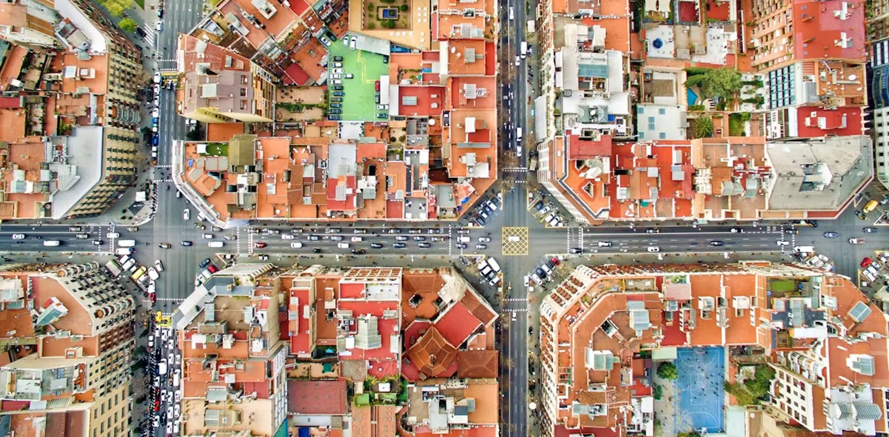

CityScales
Architecture in scale, Experience in place

Cities we've explored
05 Editions
In the age of AI, people mistake what can be generated for what must be experienced. A prompt is not a place. An algorithm cannot read the shadow of a street.
Architecture, at its core, remains a collaborative act. Great buildings are not authored by lone geniuses staring into screens. They emerge from messy, productive friction with stakeholders: hand sketches pinned to a wall, arguments about a section, late-night model-making where someone holds the glue while someone else holds the piece. They emerge from walking a site together, noticing what the other person sees, and realising that their blind spot was their insight.
City Scales was built to defend this truth. We insist that the real work of architecture happens between people, in real cities, with real constraints. Collaboration is not a soft skill added to the workshop. It is the workshop. Peer learning is not a supplement to the curriculum. It is the curriculum.
We bring students from different continents into the same room, onto the same street corner, and into the same deadline. We encourage the kind of productive discomfort that AI cannot simulate, explaining your design logic to someone who draws differently, thinks differently, and sees the city differently.
In an age of solo screen mastery, City Scales chooses collective, embodied, intercultural collaboration. Not despite AI. Because of it.
The workshop journey
Introduction & Site Immersion
Teams arrive, meet across cultures, and engage with the host city through guided site visits and briefings.
Urban Analysis & Mapping
Structured site analysis producing maps, diagrams, photographic documentation, and multi-scale findings.
Design Development
Studio sessions with international tutors transforming research into architectural proposals.
Exhibition & Critique
Final proposals presented to invited critics and displayed in a public exhibition.
Join the network
For Universities
Partner with City Scales to host or co-organise a workshop edition. We welcome universities committed to international architectural education.
Become a Partner âFor Students
Apply to participate in an upcoming workshop. Collaborate with international peers and develop design proposals that matter.
Apply for a Workshop â